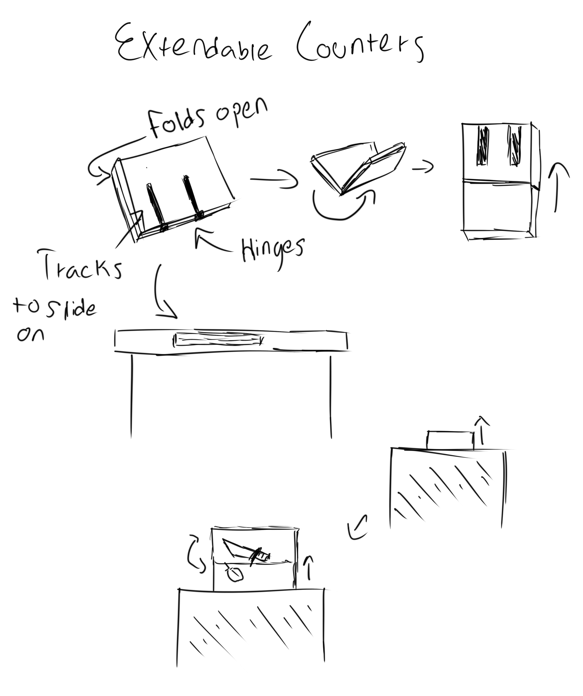

Design & Develop: Trouble in the Kitchen

Brainstorming:
On to finding solutions to the problem of limited space in the kitchen. Following the last assignment I refered to the finaly HMY statement I had made to start finding 30 solutions to the problem through a brainstorming session.
Sketching
I had made basic ideas from brainstorming, and yet I felt I needed to further develop some of the ideas before narrowing them down. I chose some of the ideas that I thought had potential and went about sketching them so I could have a visual aspect to compare before I chose 3.


Narrowing Down
After sketching out various options it was time to narrow down the options. I had chosen 12 of the ones I had found most promising to do an initial sketch, however during this process I had another idea for an small product that could be quite helpful in the kitchen, 4C, a kitchen apron with a pouch on the bottom that works as a rubbish collection space. I also chose 4E, a counter top vaccum as a more long term solution as opposed to the apron. Lastly I chose 3D, rollable extra counter/cutting boards that are stored inside the counter and fold out for maximised space.
First Choice: Kitchen Apron with Trash Container
The idea behind this kitchen apron is to be able to cleanup scraps, food waste, or other trash with ease. The lower section of the apron would be fit with a pocket that can snap open and lock to form this pouch pocket. This pocket allows you to sweep scraps off your counters into the pocket without need to make a trip to the trash. Inside the pocket would be a silicone pouch that you can remove for easy disposal.
Second Choice: Counter Top Vaccum
With an outlet directly on the wall above your counter allowing for easy cleanup for any mess. This vaccum would have a small area behind the outlet for it to coil so it can have enough reach for all of the kitchen. Under this coil area there would be a collection shoot that could sit directly over a trashbin, so no maitinence would be required.
Third Choice: Rollable Counter Space
The final choice I made was extra counter space. This works by having a hollow section inside a countertop. In this hollow space there would be tracks that the device sits on, allowing it to roll in and out based on need. Once rolled out there would be extra space to hold items, or for use as a cuttingboard. There would be a hinge on the side of this device allowing it to fold open to make extra space.
Prototyping
Rollable Counter Space
For the extendable counter space I used a chess board to illustrate the foldable aspect of this product and was able to have it sit on top of a cabinet door. As a test I held an actual cutting board in place while I had a friend try cutting an apple in half, to test the full width I switched to a full cuttingboard and did the same.


Counter Top Vaccum
For this prototype, I used cardboard tubes to illustrate the hose and mouth piece of the vaccum and as an exit tube to the trash. For a practical test I had a friend use the "vaccum" while I wiped down the counter where they tried to vaccum. I learned that it might not be as practical as I originally thought. Not only would it take breaking open the walls in your kitchen to install, but it also doesn't seem all that more efficent than just wiping down the counter normally, or utilizing the apron.

Apron with Trash Container
Although this prototype ended up quite literal, by attatching a rubbish bag to the strings of an apron it allowed for a prototype that was the most similar to what I envisioned out of all of them. I had a friend cook a meal using the prototype and recieved lots of positive feedback on the idea with the prototype needing some work.
Conclusion
After going through all the sketching and prototyping I got an idea of how practical each of the ideas was in reality and in theroy. I chose the rollout counter space/cutting board as it got the most positive feedback and has a great potential to be a great tool to have to give your kitchen more room if needed and can free up space when not needed. I believe that this product also fits well with my chosen HMY statement, as I believe it would make cooking in limited space easier by having retractable bonus counter space as well as providing a quick place to use in a rush if you don't have time to move stuff around or do dishes or whatever might set you back in the kitchen.